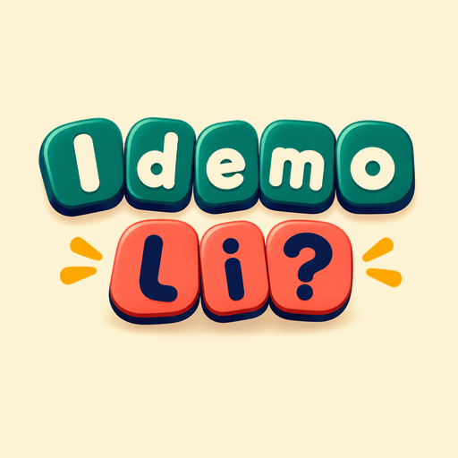

Bir dili öğrenmek,
bir kültürü geleceğe taşımaktır.
Idemo li? = Gidelim mi?
ÖĞREN•KEŞFET•AKTAR
Neden Idemo li?
Bazı diller yalnızca konuşulmaz; aileden, geçmişten ve yaşanmışlıklardan miras kalır. Benim için Boşnakça da böyle bir dil.
Balkanlarla, özellikle Bosna ve Sancak kültürüyle kurduğum bağ, zamanla bu dili daha yakından tanıma isteğine dönüştü. Boşnakça öğrenmeye başladığımda fark ettim ki bu yolculuk yalnızca yeni kelimeler öğrenmekten ibaret değildi. Bir kültürü daha iyi anlamak, geçmişle aramdaki bağı güçlendirmek ve kendime ait hissettiğim bir dünyanın kapılarını aralamaktı.
Ancak bir sorun vardı: Türkçe konuşanlar için Boşnakça öğrenmeyi kolaylaştıran, erişilebilir, eğlenceli ve kapsamlı kaynaklar yeterince yaygın değildi.
İşte Idemo li? fikri böyle doğdu.
Neden Boşnakça?
Çünkü bir dili öğrenmek, o dili konuşan insanların dünyasına yaklaşmaktır.
Türkçe ve Boşnakça arasında tarih boyunca kurulmuş güçlü bağlar var. Ortak kelimelerimiz, benzer kültürel değerlerimiz, geleneklerimiz ve birbirine dokunan hikâyelerimiz var.
İstedim ki Türkçe konuşan herkes Boşnakçaya kolayca ulaşabilsin. Bir kelimeyi öğrensin, bir cümle kursun, bir şarkının sözlerini anlasın, bir sohbetin parçası olsun.
Çünkü dil, insanlar arasındaki mesafeleri kısaltır.
Çocuklar neden ailelerinden duydukları dili öğrenmeli?
Bir çocuğun büyükanne ve büyükbabasından duyduğu bir kelimeyi anlaması, onlarla kendi dillerinde konuşabilmesi çok kıymetli.
Bazen bir ninni, bazen bir aile büyüğünün anlattığı hikâye, bazen de sofrada söylenen birkaç kelime… Bunların hepsi kültürel hafızanın parçalarıdır.
Çocukların ailelerinden duydukları dili öğrenmeleri, yalnızca iletişim kurmalarını sağlamaz. Aile hikâyelerini, geleneklerini ve kültürel miraslarını tanımalarına da yardımcı olur.
İstiyorum ki çocuklar Boşnakçayı bir ders gibi değil, oyun oynarken, eğlenirken ve keşfederken öğrensin.
Idemo li? ne sunuyor?
Idemo li?, Boşnakçayı çocuklar ve yetişkinler için daha ulaşılabilir hâle getirmek amacıyla oluşturuldu. Kelimeler, günlük konuşmalar, dil bilgisi, oyunlar, şarkılar ve interaktif etkinliklerle öğrenmeyi hayatın doğal bir parçası hâline getirmeyi hedefliyor.
Çünkü öğrenmek için illa bir sınıfta olmak gerekmiyor. Bazen bir oyun, bazen bir şarkı, bazen de merakla sorulan tek bir soru yeterli.
Bir davet…
Bu projeyi yalnızca bir dil öğrenme uygulaması olarak görmüyorum. Benim için Idemo li? geçmişle gelecek arasında kurulan küçük ama anlamlı bir köprü.
Boşnakçayı hiç bilmeyenler için bir başlangıç, biraz bilenler için bir gelişim yolu, çocuklar içinse ailelerinden gelen kültürel mirası keşfetme fırsatı.
İster yeni bir dil öğrenmek, ister köklerinizle yeniden bağ kurmak, ister çocuklarınıza farklı bir kültürün kapılarını açmak isteyin…
Hadi başlayalım mı?
Idemo li?
Nasıl öğretiyoruz?
- Seviyeni bul. Önce 30 soruluk testle nereden başlayacağını öğren.
- Her gün bir ders. Kelime kartları, dinleme ve yazma ile 5–10 dakika.
- Tekrar et. Aralıklı tekrar sistemi öğrendiklerini doğru zamanda yeniden karşına getirir.
- Kullan. Okuma metinleri, diyaloglar, şarkılar ve oyunlarla pekiştir.
Bizi Instagram'da takip et: @idemolibosnakca